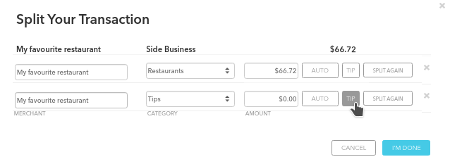

Options
Enable tip button
Percent
This will add an additional button to the "split transaction" popup which will allow you to set one of the split values to a percentage of the total cost. This is useful if you always tip the same percentage.
Example

Save Settings